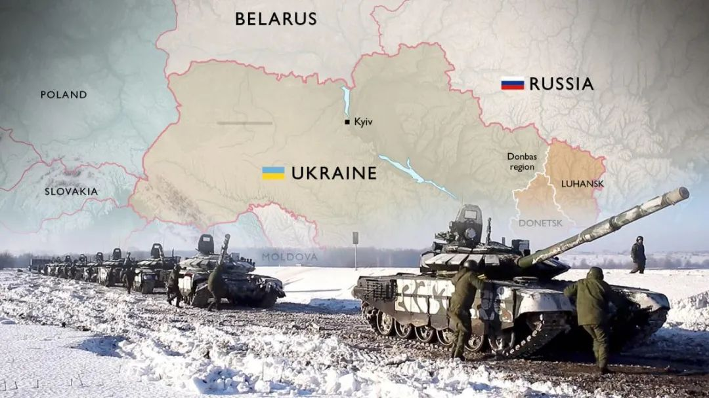

收录于合集

编者按
本文作者在2022年1月25日通过国政学人公开明确预测 俄罗斯将大概率出兵乌克兰，时间就在这个冬季 （点击链接可前往）。在公布预测的同时，作者明确表示，无论预测是否正确，作者都将公布作者的预测模型（一个简单的三个行为体的博弈模型）和推演过程。
2022年2月24日，俄罗斯发动了对乌克兰的军事打击。因此，作者的预测获得成功（尽管作者并不希望战争爆发）。为此， 复旦大学“复杂决策分析中心”将在本周五公布作者的预测俄罗斯将大概率出兵乌克兰的模型和解释。 敬请关注复旦大学“复杂决策分析中心”的官网，www.ccda.fudan.edu.cn 或者官方公众号“复旦复杂决策分析中心”。
本文的内容是作者在2022年1月25日发布的预测俄罗斯将大概率出兵乌克兰的“事后倒推”的展开，发表于《环球时报》2022-03-02，并授权国政学人发布原文。 换句话说，当作者的预测获得验证后，我们能否倒推各方的政策逻辑，看看为何战争爆发。 鉴于作者此前的预测主要是考察俄罗斯的决策，本文则主要考察美国的决策：为何看起来美国试图在努力阻吓俄罗斯出兵乌克兰，那为何最终俄罗斯还是发动了对乌克兰的军事打击？也就是说，为何美国的“阻吓”为何失败？是故意为之，还是俄罗斯确实是不可能被“阻吓”的？
基于严密的逻辑和美方的行为证据， 作者认为，我们几乎可以百分之百认定，美国不仅不是真心想“阻吓”俄罗斯出兵乌克兰，而是希望俄罗斯出兵乌克兰，从而能够“一石多鸟”。因此，此前美国的行为都是最终将俄罗斯逼到墙角，迫使俄罗斯出兵乌克兰，即便俄罗斯清楚地意识到，出兵乌克兰是一个风险极高的行为。 因此，乌克兰是美国给乌克兰、欧洲，及俄罗斯下的一剂毒药，挖的一个毒陷阱。
作者对乌克兰问题的预测效果说明了 学好国际关系理论与科学研究方法的重要性。国际关系学科既非是坐而论道、纸上谈兵，而是能够揭示国际现实的演变规律，为国家政府决策和社会主体提供智力支持。

乌克兰：美国为俄罗斯设下的陷阱？
唐世平
复旦大学特聘教授，复旦大学“复杂决策分析中心”主任
事实：
从2021年冬季开始，俄罗斯重兵集结俄罗斯- 乌克兰边境，美国及其北约盟友就一直掌握着俄罗斯的大致军事动向。进入2022年1月，美国和北约盟友更是不断密集公布俄罗斯的军事集结和动向，并且将公布这些情报宣传成为美国和北约试图阻吓俄罗斯军事打击乌克兰的努力的核心努力。但是，最终在2022年2月24日，俄罗斯出兵乌克兰。
推理：如何才能成功阻吓俄罗斯出兵乌克兰？
基于经典的 “阻吓/威慑（deterrence）”理论 ，在俄罗斯重兵集结俄罗斯- 乌克兰边境，并且2021年12月向美国（北约）下达了“（半）最后通牒”的背景下， 美国要想成功阻吓或威慑俄罗斯不出兵乌克兰，大致有以下五个做法：
**
**
1. 答应俄罗斯的所有要求。
2. 答应俄罗斯的最低要求（比如，明确表示，北约会将格鲁吉亚、乌克兰排除在外），并且承诺立即准备和俄罗斯展开全面谈判。
3. 拒绝俄罗斯的最低要求，立即在乌克兰部署美国和北约军队（所谓的“绊脚线 (trip- wire”措施），同时加快向乌克兰运送武器弹药，并明确表示如果俄罗斯出兵乌克兰，则美国和北约将迅速军事介入。
4.拒绝俄罗斯的最低要求，加快向乌克兰运送武器弹药，并明确表示如果俄罗斯出兵乌克兰，则美国和北约将迅速军事介入。
5.拒绝俄罗斯的最低要求，加快向乌克兰运送武器弹药，但明确表示即便俄罗斯出兵乌克兰，美国和北约也不会军事介入。与此同时，美国公开宣布，美国及其盟国将公开帮助乌克兰，包括提供情报，从而让俄罗斯的军事行动失去突然性。与此同时，美国及其盟国公布俄罗斯可能面临的多方面制裁措施。
显然，尽管第一个行为肯定能够阻止俄罗斯出兵乌克兰，我们不能指望美国在多方的压力下，能全盘答应俄罗斯的要求，因此第一行为选项不在美国的考虑范围之内。
美国的第二个选项也有很大的概率能够阻止俄罗斯出兵乌克兰。特别是，从理性选择来说，如果美国真心想阻止俄罗斯出兵乌克兰，这一行为是美国最应该选择的温和行为，而且各方付出的代价最小。但是，美国一口回绝了俄罗斯的最低要求。
第一和第二个选项都是相对温和的行为。如果美国拒绝了上述两项选择，而仍旧真心想阻吓俄罗斯出兵乌克兰的话，则美国就应该选择特别强硬的行为，即上面的第三和第四个选项。但是，这两个措施美国也都没有选择，而是选择了第五个选项。
很显然，在俄罗斯出兵乌克兰前，美国的行为完全背离了“阻吓/威慑 （deterrence） 理论”的基本逻辑。而与此同时，美国不断告诉世界， 俄罗斯将出兵。为什么？
**
**
图片来源：法新社
**
**
美国这样的行为只有一个逻辑解释，那就是：美国事实上希望俄罗斯出兵乌克兰，而且试图迫使俄罗斯出兵乌克兰。
首先， 通过不断告诉世界俄罗斯将出兵乌克兰，美国见俄罗斯领导人逼到了一个角落：在美国及其盟友拒绝了俄罗斯的最低条件的情形下，俄罗斯重兵集结俄罗斯- 乌克兰边境，却最后没有出兵乌克兰，俄罗斯领导人将会大失脸面，在俄罗斯国内民众面前巨大的执政压力。
其次， 通过拒绝俄罗斯的最低要求，而加快向乌克兰运送武器弹药，但明确表示即便俄罗斯出兵乌克兰，美国和北约也不会军事介入，美国能够让俄罗斯领导人心存侥幸，而同时增强乌克兰的军事抵抗能力，从而让俄罗斯如果出兵要想在战场上获胜面临更大的困难。而战事拖得越久，就对俄罗斯越不利，而对美国及其盟友越有利。这些利益不仅有物质的，也有道义的和舆论的。
最后， 通过以上措施，让俄罗斯领导人最终出兵乌克兰，美国就将强化，甚至重新获得一些已经失去的对欧洲的主导权。主要中西欧都将俄罗斯视为不共戴天的敌人，欧洲就将永远在美国的股掌之中。
综上所述，乌克兰是美国给乌克兰、欧洲，及俄罗斯挖的一个陷阱。
唐世平简介 ****
唐世平，教育部长江学者特聘教授，复旦大学教授，是当今最有国际影响的中国社会科学家之一，也是当今亚洲最优秀的社会科学家之一，“掌中星球”创始人兼CEO。唐世平教授的研究领域广泛，主要分成五个大的领域：国际政治、比较政治、制度经济学、政治（学）理论、社会科学哲学。他在这些领域都做出了世界水平的研究，并且有广泛的著述。
唐世平签名新书


 《众人皆吾师》《观念、行动、结果：社会科学方法新论》《比较政治学》“国政学人”国际关系理论主题帆布袋进入“掌中星球”
《众人皆吾师》《观念、行动、结果：社会科学方法新论》《比较政治学》“国政学人”国际关系理论主题帆布袋进入“掌中星球”
排版 | 国小政
文章观点不代表本平台观点